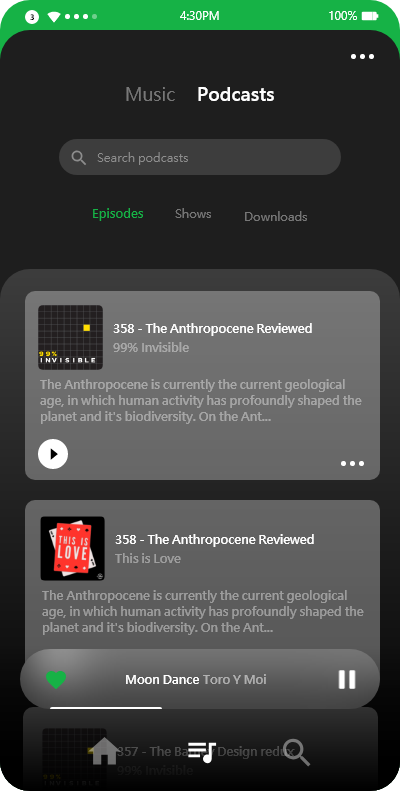
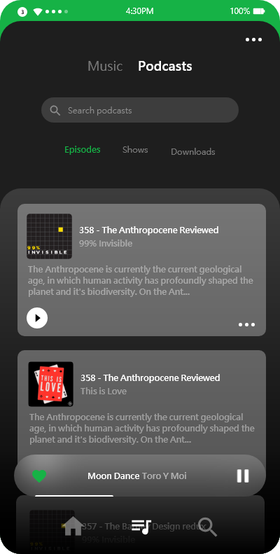

Creative Process
I used Adobe XD to create this mockup. The reason I chose Adobe XD is because I wanted to use this project as an opportunity to experiment with interactivity and animation, a feature I was missing while using Axure RP. It turns out XD has incredibly powerful animation tools. Performing complex transitions and micro-interactions feels much easier in XD in comparsion to something like After Effects, and thanks to it's simplicity, I found myself using this project as a playground to try out fun and interesting page transitions. In addition to the powerful aniamtion tools, Adobe XD also made it super easy to design custom backdrops much like in Adobe Illustrator.
 

Results
My goal with this project was to take something a bit boring, and make it fun to use and interact with. Swiping between pages and opening up new activities should be quick and seameless, but I believe that tasks like this deserve to showcase the personality of an app, whether it be through micro-interactivity or expressive animations.